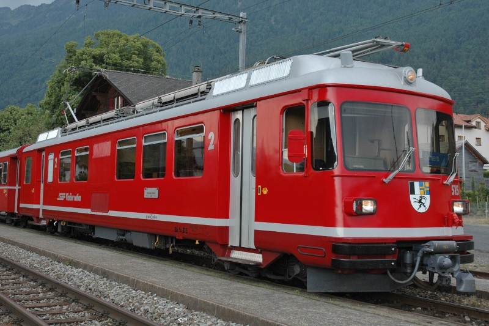

Allgemein
| Baujahr | 1979 |
| Einsatz | StN |
| Antriebstechnik | Thyristor-Anschnittsteuerung |
| Leistung | 1060 PS / 780 kW |
| Ergänzungsbremse | elektrische Widerstandsbremse |
Technische Daten
| Geschwindigkeit | 90 km/h |
| Länge | 18.70 m |
| Gewicht (Tara / Brutto) | 45 t / 48 t |
| Bremsgewicht | 45 t |
| Feststellbremse | H 22 kN (H 22 t) |
Fahrzeugausrüstung
| Zug-/ Stossvorrichtung | automatische Kupplung (G+F) |
| Vielfachsteuerung | ja (in automatischer Kupplung) |
| Zugbeeinflussung | ZSI 90 |
| Heizleitung | nur zum Vorheizen |
| Speiseluft-Leitung | ja (in automatischer Kupplung) |
| Bremssystem | Druckluftbremse |
| LBT-Leitung | nein |
| Türen | pneumatisch |
| Notfalleinrichtung | NBA blau |
Fahrgastausstattung
| Plätze 1. Klasse | keine |
| Plätze 2. Klasse | 40 |
| Klappsitze | 8 |
| Niederflureinstiege | keine |
| Rollstuhlplätze | keine |
| WC-System | 1x offen |
| Velohaken | keine |
| Fahrgastinfosystem | manuelle Railvox (zurzeit ausser Funktion) |
| Zugzielanzeigen | keine |
| Fahrgastzählung | keine |